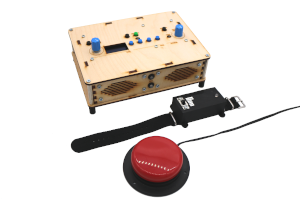
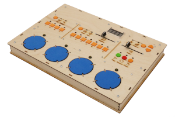
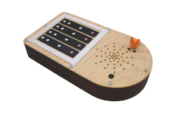

ADMI Design, Use and Longevity

Instrument One: A bespoke, guitar-inspired accessible instrument.

Instrument Two: A bespoke drum machine.

Instrument Three: a bespoke, violin-inspired accessible instrument